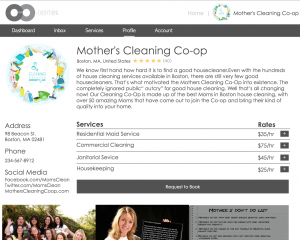
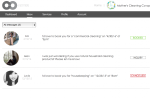

Since our presentation from last class and receiving feedback about our progress, we have decided to move in the direction of building a working prototype of a website for Co-Everything. In agreement with some of the feedback comments from last time, studies various existing platforms, including Loconomics, TaskRabbit, and even non-coop related companies such as Airbnb, in order to develop the structure of our website. Our analyses allowed us to compare pros and cons of the various platforms and to see which one would suit our prototype’s needs to best. (We made many hypotheses about what would work best, so this is where testing would help us decide what really works best.) For example, the platforms had different ways of implementing a messaging system, and we tested which one we liked more and which one we thought would be most appropriate for Co-Everything. There were also many of the same features across all platforms, which we decided to keep the same for Co-Everything as well, thinking with a “if it works, don’t fix it” mindset. Because most of our users so far are co-op members, we decided to concentrate on building the coop-side portion of our prototype for this week and identified communication towards clients as the key feature to focus on first. Below our some photos of website page layouts for some of the features we thought about.
{kind=link}
{kind=link}
The website (http://5pxper.axshare.com/home.html) that allows users to sign up as a co-op organization and set up a co-op account that provides a public profile towards clients and a messaging system with clients. The prototype can be used by co-ops to test out usability and efficiency of joining Co-Everything and getting in contact with new clients, which is something to aim for for our next step.
Right now, you can access the home page using the URL. From there you can press “Sign Up” and then the “Co-op” tab. The pop-up will lead you to creating your co-op profile page. After that, you can view your profile and also click on the “Inbox” tab in which you can see messages with clients.

{kind=link}
In addition to this week’s progress, team responsibilities have become more defined as we are becoming more clear about specific project requirements for Co-Everything. Allan expressed interest in conducting interviews each week with users, which will help with acquiring feedback and gaining key learnings on our user audiences. Kai and Lucia are more interested in prototyping the actual product of Co-Everything, since it involves more of the UI/UX design aspects of the project. This week, Lucia took on the task of paper-prototyping while Kai implemented it into a clickable prototype using Axure RP. In the future, Travis, Declan, and Samer are planning on working with existing platforms more in order to bring in more data and information about what Co-Everything eventually develop into. This is a current rough outline of team roles that we plan on defining more in the following week.
Overall, our team has made a lot of progress in terms of the actual prototype and team roles. Moving on, we hope to gain more feedback about Co-Everything and use the feedback to iterate and build upon our working prototype. Until next time!